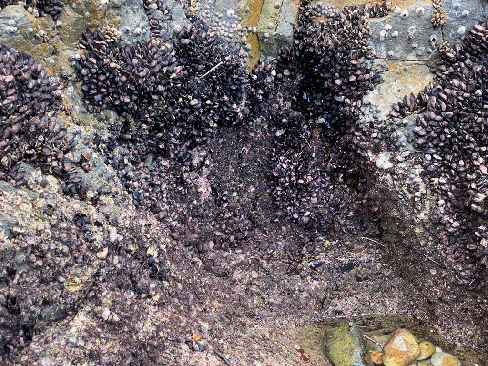
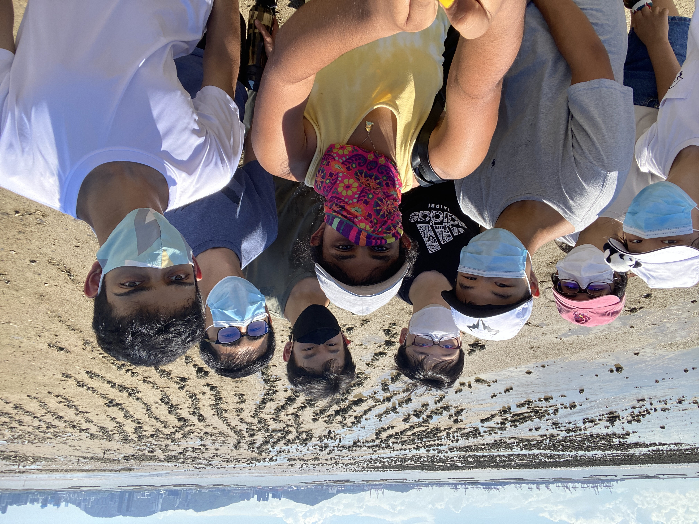

Across the world, Vibrio pathogens are becoming increasingly prevalent in seafood, specifically bivalves and oysters. In fact, there are more than 80,000 people being infected by Vibrio-related bacterium, and an estimated 100 Vibrio-caused deaths each year, which amounts to 95% of all seafood-related deaths.
Unfortunately, as all current methods of Vibrio detection rely on the use of expensive thermocycling machines, there is no cheap, quick, and effective method to determine if oysters are clean. Additionally, there are no oyster contamination purification methods capable of killing pathogens without killing the oysters in the process.
Our team’s solution for the lack of viable detection methods is a Vibrio detection kit that relies on a novel isothermal amplification method in conjunction with the highly specific enzyme CRISPR Cas12a for the rapid and accurate detection of minuscule Vibrio DNA signals.
Besides detection, another large part of the issue with Vibrio contamination in oysters is the lack of sufficient purification methods. Our solution is using algae – natural oyster feed used in aquacultures to feed oysters – to express highly effective anti-Vibrio antimicrobial peptides for eliminating Vibrio contamination in fresh samples, or contamination remaining from current purification methods.